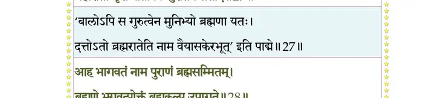
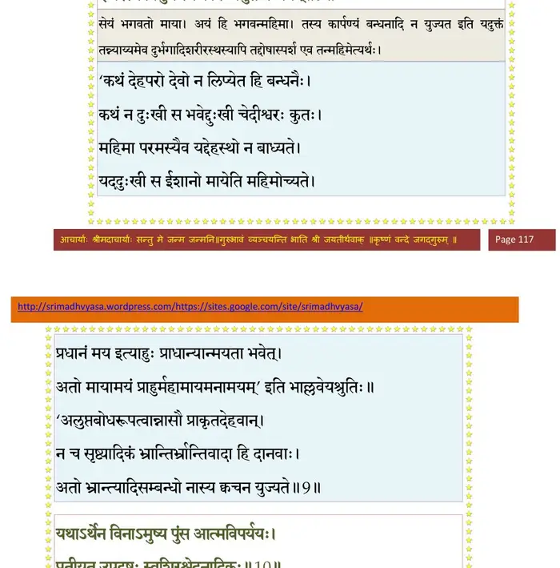
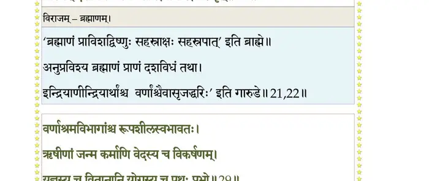
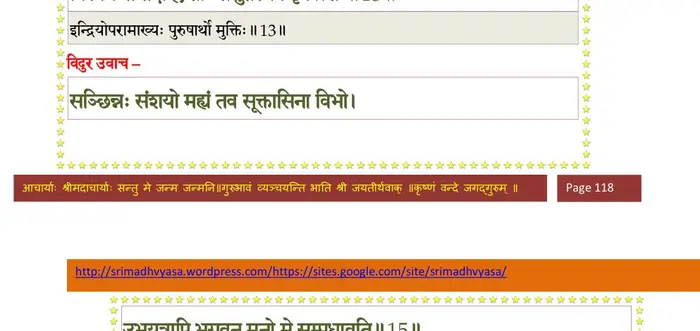
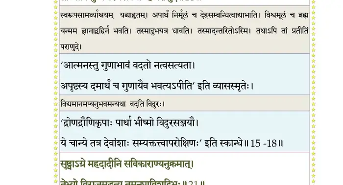
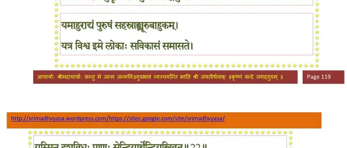
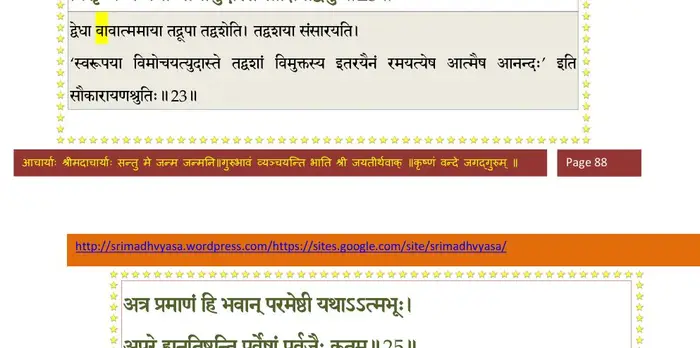
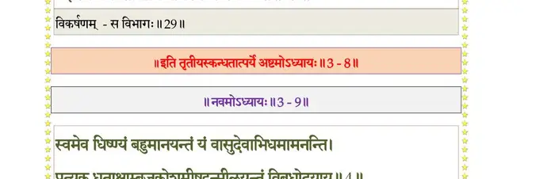
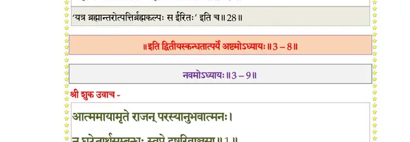
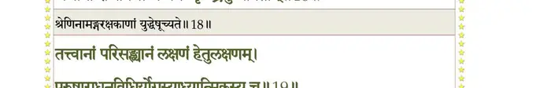

स्कन्ध 3 · अध्याय 8
श्लोक १
एवं ब्रुवाणं मैत्रेयं द्वैपायनसुतो बुधः ।
प्रीणयन्निव भारत्या विदुरः प्रत्यभाषत।। १ ।।
प्रीणयन्निव भारत्या विदुरः प्रत्यभाषत।। १ ।।
श्लोक २
विदुर उवाच–
ब्रह्मन् कथं भगवतश्चिन्मात्रस्याविकारिणः ।
लीलया चापि युज्येरन् निर्गुणस्य गुणाः क्रियाः।। २ ।।
ब्रह्मन् कथं भगवतश्चिन्मात्रस्याविकारिणः ।
लीलया चापि युज्येरन् निर्गुणस्य गुणाः क्रियाः।। २ ।।
भागवततात्पर्यनिर्णय

श्लोक ३
क्रीडाया मुद् यतोऽर्हस्य कामं चिक्रीडिषाऽन्यतः ।
स्वतस्तृप्तस्य तु कथं निर्वृतस्य सदात्मनः।। ३ ।।
स्वतस्तृप्तस्य तु कथं निर्वृतस्य सदात्मनः।। ३ ।।
भागवततात्पर्यनिर्णय
श्लोक ४
अस्राक्षीत् भगवान् विश्वं गुणमय्याऽऽत्ममायया ।
तथा संस्थापयत्येतद् भूयः प्रत्यभिधास्यति।। ४ ।।
तथा संस्थापयत्येतद् भूयः प्रत्यभिधास्यति।। ४ ।।
श्लोक ५
देशतः कालतो योऽसाववस्थातः स्वतोऽन्यतः ।
अविलुप्तावबोधात्मा स युज्येताजया कथम्।। ५ ।।
अविलुप्तावबोधात्मा स युज्येताजया कथम्।। ५ ।।
भागवततात्पर्यनिर्णय
श्लोक ६
भगवानेष एवैकः सर्वक्षेत्रेष्ववस्थितः ।
अमुष्य दुर्भगत्वं वा क्लेशो वा कर्मभिः कुतः।। ६ ।।
अमुष्य दुर्भगत्वं वा क्लेशो वा कर्मभिः कुतः।। ६ ।।
भागवततात्पर्यनिर्णय
श्लोक ७
एतस्मिन् मे मनो विद्वन् खिद्यतेऽज्ञानसंकटे ।
तन्नः पराणुद विभो कश्मलं मानसं महत्।। ७ ।।
तन्नः पराणुद विभो कश्मलं मानसं महत्।। ७ ।।
श्लोक ८
शुक उवाच–
स इत्थं चोदितः क्षत्त्रा तत्त्वजिज्ञासुना मुनिः ।
प्रत्याह भगवच्चित्तः स्मयन्निव गतस्मयः।। ८ ।।
स इत्थं चोदितः क्षत्त्रा तत्त्वजिज्ञासुना मुनिः ।
प्रत्याह भगवच्चित्तः स्मयन्निव गतस्मयः।। ८ ।।
श्लोक ९
मैत्रेय उवाच–
सेयं भगवतो माया न्याय्यं येन विरुध्यते ।
ईश्वरस्य विमुक्तस्य कार्पण्यमुत बन्धनम्।। ९ ।।
सेयं भगवतो माया न्याय्यं येन विरुध्यते ।
ईश्वरस्य विमुक्तस्य कार्पण्यमुत बन्धनम्।। ९ ।।
भागवततात्पर्यनिर्णय

श्लोक १०
यथाऽर्थेन विनाऽमुष्य पुंस आत्मविपर्ययः ।
प्रतीयत उपद्रष्टुः स्वशिरश्छेदनादिकः।। १० ।।
प्रतीयत उपद्रष्टुः स्वशिरश्छेदनादिकः।। १० ।।
भागवततात्पर्यनिर्णय
श्लोक ११
यथा जले चन्द्रमसः कम्पादिस्तत्कृतो गुणः ।
दृश्यतेऽसन्नपि द्रष्टुरात्मनोऽनात्मनो गुणः।। ११ ।।
दृश्यतेऽसन्नपि द्रष्टुरात्मनोऽनात्मनो गुणः।। ११ ।।
भागवततात्पर्यनिर्णय
श्लोक १२
स वै निवृत्तिधर्मेण वासुदेवानुकम्पया ।
भगवद्भक्तियोगेन तिरोधत्ते शनैरिह।। १२ ।।
भगवद्भक्तियोगेन तिरोधत्ते शनैरिह।। १२ ।।
भागवततात्पर्यनिर्णय

श्लोक १३
यदेन्द्रियोपरामार्थो दृष्टात्मनि परे हरौ ।
विलीयन्ते तदा क्लेशाः संसुप्तस्येव कृत्स्नशः।। १३ ।।
विलीयन्ते तदा क्लेशाः संसुप्तस्येव कृत्स्नशः।। १३ ।।
भागवततात्पर्यनिर्णय

श्लोक १४
अशेषसंक्लेशशमं विधत्ते गुणानुवादश्रवणं मुरारेः ।
किं वा पुनस्तच्चरणारविन्दपरागसेवारतिरात्मलब्धा।। १४ ।।
किं वा पुनस्तच्चरणारविन्दपरागसेवारतिरात्मलब्धा।। १४ ।।
श्लोक १५
विदुर उवाच–
संछिन्नः संशयो मह्यं तव सूक्तासिना विभो ।
उभयत्रापि भगवन्मनो मे सम्प्रधावति।। १५ ।।
संछिन्नः संशयो मह्यं तव सूक्तासिना विभो ।
उभयत्रापि भगवन्मनो मे सम्प्रधावति।। १५ ।।
भागवततात्पर्यनिर्णय
श्लोक १६
साधु तद् व्याहृतं विद्वन्नात्ममायायनं हरेः ।
आभात्यपार्थं निर्मूलं विश्वमूलं न यद् बहिः।। १६ ।।
आभात्यपार्थं निर्मूलं विश्वमूलं न यद् बहिः।। १६ ।।
भागवततात्पर्यनिर्णय
श्लोक १७
यश्च मूढतमो लोके यश्च बुद्धेः परं गतः ।
तावुभौ सुखमेधेते क्लिश्यत्यन्तरितो जनः।। १७ ।।
तावुभौ सुखमेधेते क्लिश्यत्यन्तरितो जनः।। १७ ।।
भागवततात्पर्यनिर्णय
श्लोक १८
अर्थाभावं विनिश्चित्य प्रतीतस्याप्यनात्मनः ।
तां चापि युष्मच्चरणसेवयाऽहं पराणुदे।। १८ ।।
तां चापि युष्मच्चरणसेवयाऽहं पराणुदे।। १८ ।।
भागवततात्पर्यनिर्णय

श्लोक १९
यत्सेवया भगवतः कूटस्थस्य मधुद्विषः ।
रतिरासो भवेत् तीव्रः पादयोर्व्यसनार्दनः।। १९ ।।
रतिरासो भवेत् तीव्रः पादयोर्व्यसनार्दनः।। १९ ।।
श्लोक २०
दुरापा ह्यल्पतपसः सेवा वैकुण्ठवर्त्मसु ।
यत्रोपगीयते नित्यं देवदेवो जनार्दनः।। २० ।।
यत्रोपगीयते नित्यं देवदेवो जनार्दनः।। २० ।।
श्लोक २१
सृष्ट्वाऽग्रे महदादीनि सविकाराण्यनुक्रमात् ।
तेभ्यो विराजमुद्धृत्य तमनु प्रविशद् विभुः(प्रभुः)।। २१ ।।
तेभ्यो विराजमुद्धृत्य तमनु प्रविशद् विभुः(प्रभुः)।। २१ ।।
भागवततात्पर्यनिर्णय

श्लोक २२
यमाहुराद्यं पुरुषं सहस्राङ्घ्र्यूरुबाहुकम् ।
यत्र विश्व इमे लोकाः सविकाराः समासते।। २२ ।।
यत्र विश्व इमे लोकाः सविकाराः समासते।। २२ ।।
श्लोक २३
यस्मिन् दशविधः प्रणः सेन्द्रियार्थेन्द्रियस्त्रिवृत् ।
त्वयेरिता यतो वर्णास्तद्विभूतीर्वदस्व नः।। २३ ।।
त्वयेरिता यतो वर्णास्तद्विभूतीर्वदस्व नः।। २३ ।।
श्लोक २४
यत्र पुत्रैश्च पौत्रैश्च नप्तृभिः सह गोत्रजैः ।
प्रजा विचित्राकृतय आसन् याभिरिदं ततम्।। २४ ।।
प्रजा विचित्राकृतय आसन् याभिरिदं ततम्।। २४ ।।
श्लोक २५
प्रजापतीनां स पतिश्चक्लृपे कान् प्रजापतीन् ।
सर्गांश्चैवानुसर्गांश्च मनून् मन्वन्तराधिपान्।। २५ ।।
सर्गांश्चैवानुसर्गांश्च मनून् मन्वन्तराधिपान्।। २५ ।।
श्लोक २६
एतेषामपि वंशांश्च वंशानुचरितानि च ।
उपर्यधश्च ये लोका भूमेर्मित्रात्मजासते ।
तेषां संस्थां प्रमाणं च भूर्लोकस्य च वर्णय।। २६ ।।
उपर्यधश्च ये लोका भूमेर्मित्रात्मजासते ।
तेषां संस्थां प्रमाणं च भूर्लोकस्य च वर्णय।। २६ ।।
भागवततात्पर्यनिर्णय

श्लोक २७
तिर्यङ्मानुषदेवानां सरीसृपपतत्रिणाम् ।
वद नः सर्गसंव्यूहं गर्भस्वेदद्विजोद्भिदाम्।। २७ ।।
वद नः सर्गसंव्यूहं गर्भस्वेदद्विजोद्भिदाम्।। २७ ।।
श्लोक २८
गुणावतारैर्विश्वस्य सर्गस्थित्यप्ययात्मनः ।
सृजतः श्रीनिवासस्य व्याचक्ष्वोदारविक्रमम्।। २८ ।।
सृजतः श्रीनिवासस्य व्याचक्ष्वोदारविक्रमम्।। २८ ।।
श्लोक २९
वर्णाश्रमविभागांश्च रूपशीलस्वभावतः।। २९ ।।
श्लोक ३०
ऋषीणां जन्मकर्माणि वेदस्य च विकर्षणम् ।
यज्ञस्य च वितानानि योगस्य च पथः प्रभो।। ३० ।।
यज्ञस्य च वितानानि योगस्य च पथः प्रभो।। ३० ।।
भागवततात्पर्यनिर्णय

श्लोक ३१
नैष्कर्म्यस्य च सांख्यस्य तन्त्रं वा भगवत्स्मृतम् ।
पाषण्डपथवैषम्यं प्रतिलोमनिवेशनम्।। ३१ ।।
पाषण्डपथवैषम्यं प्रतिलोमनिवेशनम्।। ३१ ।।
श्लोक ३२
जीवस्य गतयो याश्च यावर्तीर्गुणकर्मजाः ।
धर्मार्थकाममोक्षाणां निमित्तान्यविरोधतः।। ३२ ।।
धर्मार्थकाममोक्षाणां निमित्तान्यविरोधतः।। ३२ ।।
श्लोक ३३
वार्ताया दण्डनीतेश्च श्रुतस्य च विधिं पृथक् ।
श्राद्धस्य च विधिं ब्रह्मन् पितॄणां सर्वमेव च।। ३३ ।।
श्राद्धस्य च विधिं ब्रह्मन् पितॄणां सर्वमेव च।। ३३ ।।
भागवततात्पर्यनिर्णय

श्लोक ३४
ग्रहनक्षत्रतारणां कालावयवसंस्थितिम् ।
दानस्य तपसो वापि यच्चेष्टापूर्तयोः फलम्।। ३४ ।।
दानस्य तपसो वापि यच्चेष्टापूर्तयोः फलम्।। ३४ ।।
श्लोक ३५
प्रवासस्थस्य यो धर्मो यश्च पुंस उतापदि ।
येन वा भगवांस्तुष्येद् धर्मयोनिर्जनार्दनः।। ३५ ।।
येन वा भगवांस्तुष्येद् धर्मयोनिर्जनार्दनः।। ३५ ।।
श्लोक ३६
सम्प्रसीदति वा येषामेतदाख्याहि मेऽनघ ।
अनुव्रतानां शिष्याणां पुत्राणां च द्विजोत्तम।। ३६ ।।
अनुव्रतानां शिष्याणां पुत्राणां च द्विजोत्तम।। ३६ ।।
भागवततात्पर्यनिर्णय

श्लोक ३७
अनापृष्टमपि ब्रूयुर्गुरवो दीनवत्सलाः ।
तत्त्वानां भगवस्तेषां कतिधा प्रतिसंक्रमः।। ३७ ।।
तत्त्वानां भगवस्तेषां कतिधा प्रतिसंक्रमः।। ३७ ।।
श्लोक ३८
तत्रेमं क उपासीरन् क उ स्विदनुशेरते ।
पुरुषस्य च संस्थानं स्वरूपं वा परस्य च ।
ज्ञानं च नैगमं यत् तद् गुरुशिष्यप्रयोजनम्।। ३८ ।।
पुरुषस्य च संस्थानं स्वरूपं वा परस्य च ।
ज्ञानं च नैगमं यत् तद् गुरुशिष्यप्रयोजनम्।। ३८ ।।
श्लोक ३९
निमित्तानि च तस्येह प्रेक्तान्यनघ सूरिभिः ।
स्वतो ज्ञानं कुतः पुंसां भक्तिर्वैराग्यमेव वा।। ३९ ।।
स्वतो ज्ञानं कुतः पुंसां भक्तिर्वैराग्यमेव वा।। ३९ ।।
श्लोक ४०
एतान् मे पृच्छतः प्रश्नान् हरेः कर्मविवित्सया ।
ब्रूहि मेऽन्धस्य मित्रत्वादजया नष्टचक्षुषः।। ४० ।।
ब्रूहि मेऽन्धस्य मित्रत्वादजया नष्टचक्षुषः।। ४० ।।
श्लोक ४१
सर्वे वेदाश्च यज्ञाश्च तपोदानानि चानघ ।
जीवाभयप्रदानस्य न कुर्वीरन् कलामपि।। ४१ ।।
जीवाभयप्रदानस्य न कुर्वीरन् कलामपि।। ४१ ।।
श्लोक ४२
श्रीशुक उवाच–
स इत्थमापृष्टपुराणकल्पः कुरुप्रधानेन मुनिप्रधानः ।
प्रवृद्धहर्षो भगवत्कथायां संचोदितस्तं प्रहसन्निवाह।। ४२ ।।
स इत्थमापृष्टपुराणकल्पः कुरुप्रधानेन मुनिप्रधानः ।
प्रवृद्धहर्षो भगवत्कथायां संचोदितस्तं प्रहसन्निवाह।। ४२ ।।
।। इति श्रीमद्भागवते तृतीयस्कन्धे अष्टमोऽध्यायः ।।